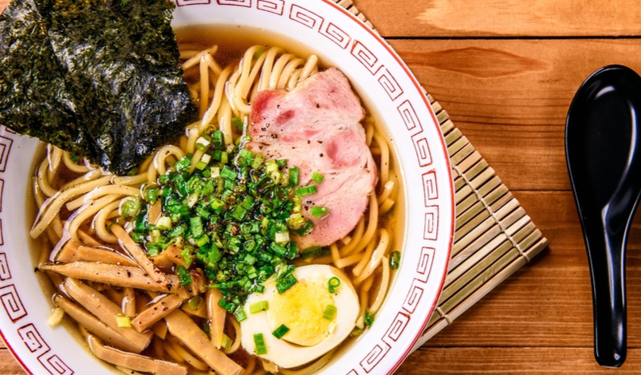

Lámen Clássico
Ingredientes do lámen
- 300 g de filé de frango
- 2 embalagens de lámen instantâneo
- 400 ml de água
- 150 g de shimeji grande
- 1/2 xícara (chá) de shoyu
- 1 folha de nori
- 1 colher (sopa) de azeite extra-virgem
- 1 ovo
- 2 dentes de alho picados
- 100 g de cenoura descascada
- gengibre picado a gosto
- cebolinha a gosto
- sal e pimenta-do-reino a gosto
Modo de preparo
- O primeiro passo para preparar a sua receita é limpar bem os filés de frango.
- Em seguida, tempere-os com sal e pimenta a gosto.
- Aqueça uma frigideira com azeite em fogo alto.
- Refogue o alho com gengibre até ficar levemente dourado.
- Abaixe o fogo, acrescente o frango e deixe dourar dos dois lados.
- Acrescente aproximadamente 1/2 xícara (chá) de água e o shoyu.
- Cozinhe o frango por 5 minutos de cada lado. Reserve.
- Em uma panela separada, coloque o lámen instantâneo para cozinhar junto com o tempero que vem com ele.
- Quando estiver pronto, retire o macarrão mas reserve o caldo.
- No caldo de cozimento, cozinhe a cenoura descascada, o shimeji e o ovo.
- Em uma tigela grande, coloque o lámen, acrescente os legumes com o caldo, a folha de nori, o ovo cozido cortado ao meio e, se preferir, adicione shoyu.
- Sirva com cebolinha salpicada a gosto.
informações Inportantes!!
Visite o tudogostoso e veja a reveita real feita por Isabela Henriques